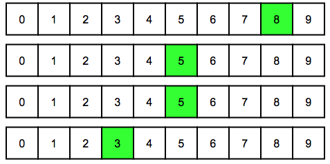
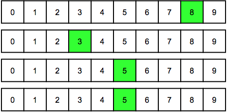

Ratkaisu
Kaikki 3 erilaista koodia on esitetty alla:
| 8553 | 8535 | 8355 |
|  |  |
 |
Ensimmäinen numero on aina 8, ja on kolme eri tapaa asettaa kaksi numeroa 5 viimeisiin kolmeen paikkaan. Jäljelle jäävään paikkaan tulee aina numero 3.
Kaikki 6 erilaista koodia ovat: 8551, 8552, 8515, 8525, 8155, 8255.
Ensimmäinen numero on aina 8, ja on kolme eri tapaa asettaa kaksi numeroa 5 viimeisiin kolmeen paikkaan. Jäljelle jäävään paikkaan tulee joko 1 tai 2.
Kaikki 6 erilaista koodia ovat: 3355, 3553, 3535, 5335, 5353, 5533 .
Nämä löytyvät asettamalla systemaattisesti kaksi numeroa 3 kaikkiin eri paikkoihin. Jäljelle jääviin paikkoihin asetetaan kaksi numeroa 5.
Pienin määrä klikkauksia saavutetaan käymällä koodit läpi sellaisella järjestyksessä, että edellisestä koodista seuraavaan päästään aina kahdella klikkauksella. Klikkauksia tarvitaan tällöin 4 (= ensimmäinen koodi) + 5x2 (= loput 5 koodia) = 14 kappaletta.
Tämä on tietojenkäsittelyä!
Tehtävässä pitää luetella kaikki tietyt numeroiden lukumääriä koskevat rajoitteet täyttävät ratkaisut. Tietojenkäsittelyn erilaisissa sovelluksissa kohdataan paljon tämäntapaisia hakuongelmia, joissa jostain mahdollisten ratkaisuiden joukosta halutaan etsiä tietyt rajoitteet täyttäviä ratkaisuita. Ongelma voidaan ratkaista esimerkiksi systemaattisella kaikkien mahdollisten ratkaisuiden läpikäynnillä (ns. täydellinen haku), joskin tämä voi olla hyvin tehotonta, jos mahdollisia ratkaisuja on paljon.
Usein ratkaisuiden läpikäyntiä voidaan tehostaa huomattavasti, jos hakuprosessin aikana voidaan jo varhaisessa vaiheessa karsia pois sellaisia ratkaisuvaihtoehtoja, jotka eivät selvästi voi täyttää rajoitteita. Esimerkiksi tässä tehtävässä olisi ollut periaatteessa 9999 erilaista tutkittavaa koodia (kun alkuasetelmaa 0000 ei lasketa), mutta rajoitteina annettujen numeroiden lukumäärien huomiointi auttoi keskittymään vain pieneen määrään mahdollisia ratkaisuita.
Katso lisää esim. https://en.wikipedia.org/wiki/Brute-force_search (englanniksi).